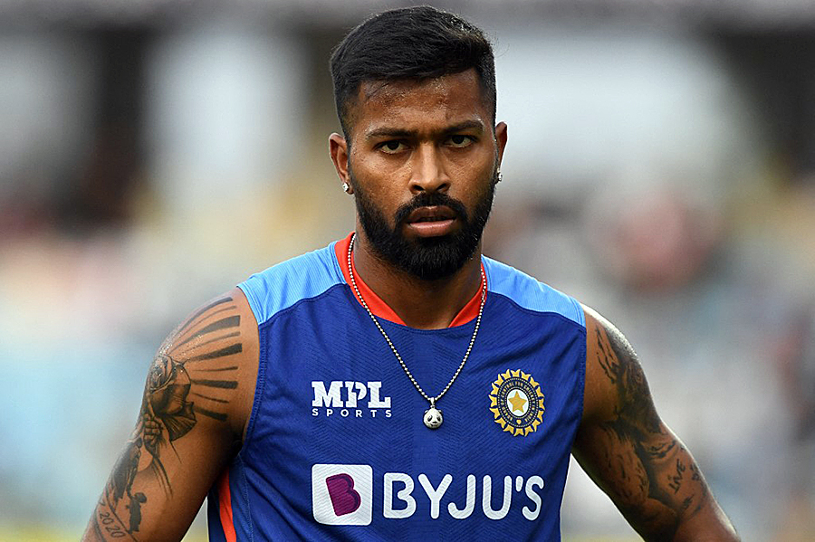

Hardik’s demotion: Vice-captaincy a fancy designation with no perks, power or immunity
Perceptions in Indian cricket change in a matter of weeks. And at times it can have nothing to do with the performance of the players. Hardik Pandya went from being T20 World Cup final’s game-changer, designated vice-captain, captain-in-waiting to a powerless foot-soldier in new commander Suryakumar Yadav’s unit. Shubman Gill, on the other hand, leap-frogged from being a reserve player to being the vice-captain. So should this be seen as Gill’s promotion and Hardik’s demotion? Not really, would say those familiar with the power equations of the Indian dressing room. On paper, a captain’s deputy is the team’s designated No.2 and also the heir apparent.
Comments
hero: nice